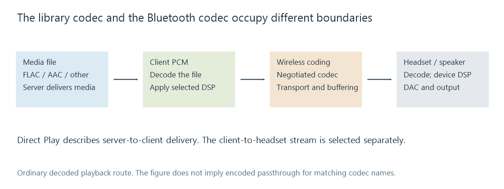

Bluetooth audio
Bluetooth audio uses a negotiated wireless audio profile and codec between a transmitting device and a receiving headset or speaker.
A lossless file in an Emby library can reach the app intact and still be encoded into a different format for Bluetooth headphones. The media stream from the server and the wireless audio stream from the client device are separate parts of the route.
The client normally decodes the media into PCM, applies any selected audio processing, and feeds the system's Bluetooth output. That output negotiates an audio profile and radio codec with the headphones or speaker.

A FLAC label in the library identifies the stored codec. It does not identify the radio codec. Even when the file and radio link both use a codec named AAC, matching names do not prove that the original coded packets were forwarded unchanged.
The profile defines the kind of connection
Two audio architectures have their own pages:
- A2DP provides media distribution over Bluetooth Classic, with SBC as its common mandatory codec.
- LE Audio uses LE isochronous transport and an audio framework supporting unicast and broadcast use cases.
A bidirectional communications route can have different format and processing requirements from music playback. Opening a microphone on a Classic headset can cause the operating system to select a communications profile instead of its A2DP media route. The specific behavior depends on the headset and host implementation; a paired device name does not establish the active profile.
Media buttons and playback commands are another layer. Successfully pausing a movie from the headset proves that the relevant control path works, not which codec is carrying its sound.
What a change during playback can reveal
| Observation | Useful boundary to inspect |
|---|---|
| Sound changes when another app opens the headset microphone | Active audio profile, selected format and communications processing |
| Audio is delayed by a roughly constant amount | Reported output delay and the player's compensation |
| Audio occasionally breaks up | Radio delivery, receiver buffer and local producer timing |
| Sound has different dynamics or tonal balance | Player processing, OS output processing and headset DSP |
| Server reports Direct Play but headphones receive lossy audio | The client's separate wireless encoding stage |
These observations are starting points for a trace, not diagnoses based on symptoms alone.
A wireless receiver needs time to receive, buffer, decode and present audio. Codec frame duration is one contributor, while transport buffering and device processing contribute others. A fixed delay can be accommodated by scheduling video appropriately; delay that varies or is reported inaccurately creates a different synchronization problem.